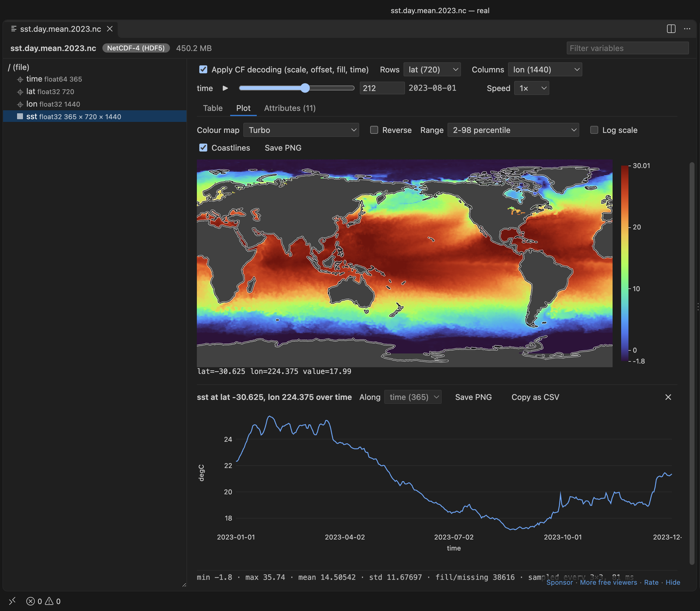

Trình xem NetCDF miễn phí chạy trong VS Code
Cài tiện ích miễn phí NetCDF Viewer & HDF5 Viewer trong VS Code rồi bấm vào tệp .nc. Bạn có phần header, cây biến, bản đồ có đường bờ biển, thanh trượt thời gian và chuỗi thời gian của bất kỳ điểm nào bạn bấm, không cần Python, NCL hay cài đặt nào khác. Trình xem này cũng mở tệp HDF5 .h5 và tệp MATLAB 7.3 .mat, và tất cả đều miễn phí. Zovo Pro (19 USD, trả một lần) thêm hai công cụ, Compare two files và Export a subset, mỗi công cụ có 3 lượt dùng thử miễn phí.
Miễn phí, giấy phép MIT. ID tiện ích zovo.hdf5-netcdf-explorer, phiên bản 0.6.5.
Hướng dẫn này cũng có bằng English · Français · Italiano · Português (Brasil) · Polski · 简体中文 · Čeština · हिन्दी · Bahasa Indonesia · 한국어 · Nederlands · Русский · Svenska · ไทย · Türkçe · Українська · 繁體中文 · Deutsch · Español · 日本語

Các bước trong VS Code
- Cài NetCDF Viewer & HDF5 Viewer từ Marketplace, hoặc nhấn Ctrl+P (Cmd+P trên macOS) rồi chạy
ext install zovo.hdf5-netcdf-explorer. - Bấm vào tệp
.nc,.nc4,.netcdfhoặc.cdftrong Explorer. Trang tổng quan hiện định dạng, các chiều (dimension), thuộc tính toàn cục và bảng mọi biến, khá giốngncdump -h. - Chọn một biến trong cây bên trái. Một lát cắt 2-D được vẽ thành heatmap, có đường bờ biển khi hàng và cột là vĩ độ và kinh độ.
- Kéo thanh trượt thời gian, hoặc nhấn ▶ bên cạnh để chạy qua các mốc thời gian. Bấm vào một điểm trên bản đồ để vẽ chuỗi thời gian của điểm đó.
- Mở tab Table để xem giá trị theo từng trang, 100 hàng x 30 cột, với giá trị tọa độ làm tiêu đề.
- Bấm "Save PNG" để lưu hình, hoặc "Export slice…" để lưu lát cắt đang hiện thành CSV hoặc JSON. "Copy xarray code" cho dòng Python tương ứng với lát cắt đó.
- Với tệp HDF5, bấm vào tệp
.h5. Với tệp MATLAB 7.3.mat, nhấp chuột phải và chọn "Open in HDF5 NetCDF Explorer".
Những gì miễn phí và Zovo Pro thêm gì
Mọi định dạng, cây biến, thuộc tính, bảng, biểu đồ và bản đồ có đường bờ biển, Play, chuỗi thời gian theo điểm, Save PNG và Export slice đều miễn phí. Không cần Python, và các tính năng này không gọi mạng.
Export a subset hoạt động như ncks -d hoặc .sel của xarray. Bạn chọn một biến và một khoảng cho từng chiều, theo chỉ số (0:99) hoặc theo giá trị (30..60, 2023-08-01..2023-08-31). Công cụ lưu một tệp NetCDF có tọa độ, thuộc tính và một dòng history, hoặc một tệp CSV gọn với mỗi điểm một dòng. Bạn có một tệp nhỏ cho một vùng và một khoảng thời gian mà không phải viết script.
Cách dùng Export a subset (Zovo Pro)
- Mở tệp rồi bấm nút "Export subset…" cạnh "Export slice…", hoặc nhấp chuột phải vào tệp trong Explorer và chọn "Zovo Pro: Export a Subset of a Variable".
- Hoặc chạy "NetCDF Viewer Pro: Export Subset of a Variable (NetCDF or CSV)..." từ Command Palette.
- Gõ khoảng cho từng chiều. Ô nhập hiện phần bạn đã chọn ngay khi gõ.
- Chọn NetCDF hoặc CSV rồi chọn nơi lưu. Một thông báo hiện tiến độ, và Cancel dừng lại mà không để lại tệp ghi dở.
Export a subset chạy được 3 lần miễn phí trên máy của bạn trước khi yêu cầu giấy phép. Không có cửa sổ bật lên và không có đếm ngược.
Zovo Pro có giá 19 USD, trả một lần. Đây không phải gói thuê bao, và giấy phép mở các công cụ Pro trong mọi tiện ích Zovo, không chỉ trong NetCDF Viewer & HDF5 Viewer. Sau khi bạn thanh toán bằng thẻ (Stripe), khóa giấy phép hiện ở trang tiếp theo. Trong VS Code, chạy "Zovo Pro: Enter Zovo Pro license key" từ Command Palette rồi dán khóa vào. Khóa được kiểm tra ngay trên máy của bạn, không cần kết nối mạng. Nếu dùng GitHub Sponsors, hãy chọn mức "$19 one time", rồi chạy "Zovo Pro: I already paid: unlock with GitHub Sponsors".
Nhóm 5 người trả 59 USD, cũng một lần (bằng thẻ). Mọi quy định và mọi công cụ Pro có trên trang Zovo Pro (tiếng Anh).
Các bước trong Cursor, Windsurf hoặc VSCodium
- Mở khung Extensions bằng Ctrl+Shift+X (Cmd+Shift+X trên macOS).
- Tìm
zovo.hdf5-netcdf-explorerrồi bấm Install. Cursor, Windsurf và VSCodium cài tiện ích từ Open VSX, nơi tiện ích này có tênzovo/hdf5-netcdf-explorer. - Nếu trình soạn thảo của bạn không có kho tiện ích, hãy tải tệp .vsix từ trang Open VSX rồi chạy "Extensions: Install from VSIX...".
- Sau đó mọi thứ hoạt động giống như trong VS Code.
NetCDF Viewer & HDF5 Viewer làm được gì
- NetCDF-4 và NetCDF-4 classic, NetCDF-3 classic và 64-bit offset, và CDF-5 (dữ liệu 64-bit).
- Tệp HDF5 (
.h5,.hdf5,.he5,.hdf) nén bằng deflate, shuffle, szip, LZF, Blosc, bitshuffle, LZ4, Zstd, bzip2 và ZFP. - MATLAB 7.3
.matvà các tệp dựa trên HDF5 khác như.jld2,.loomvà.h5ad. - Giải mã CF cho
scale_factor,add_offset,_FillValuevà đơn vị thời gian, kể cả các lịch noleap, 360_day và all_leap. - Tệp trên máy từ xa qua Remote SSH, WSL hoặc dev container.
Những gì không làm được
- Không hỗ trợ Zarr và HDF4. Tệp MATLAB
.matlưu theo định dạng v5 không phải HDF5 nên không mở được. Hãy lưu lại bằngsave(filename, '-v7.3'). - Đường bờ biển chỉ được vẽ trên lưới kinh vĩ độ đều. Lưới cong (curvilinear) có vĩ độ và kinh độ 2-D, và lưới chiếu tính bằng mét, không có đường bờ biển.
- Mảng lớn hơn 512 x 512 được lấy mẫu khi vẽ. Mỗi tệp xuất ghi tối đa 1.000.000 giá trị (cài đặt
hdf5NetcdfExplorer.maxReadValues). - Không hỗ trợ hệ thống tệp ảo, như kho GitHub mở trong vscode.dev.
- Dataset dùng bộ lọc HDF5 khác, như SZ hoặc JPEG, hiện thông báo thay vì giá trị.
Câu hỏi thường gặp
Có miễn phí không?
Phần xem là miễn phí, gồm mọi định dạng, bản đồ, Play, chuỗi thời gian, Save PNG và Export slice. Hai công cụ Pro, Compare two files và Export a subset, mỗi công cụ có 3 lượt dùng thử miễn phí. Sau đó cần Zovo Pro, 19 USD một lần cho mọi tiện ích Zovo.
Có trình xem NetCDF cho Windows không?
Có. Tiện ích này chạy ở mọi nơi VS Code chạy, gồm Windows, macOS và Linux, và không cần Python.
Có mở được tệp HDF5 và MAT không?
Có, với tệp HDF5 .h5 và tệp MATLAB 7.3 .mat. Tệp .mat MATLAB v5 cũ hơn không phải HDF5 và chỉ hiện thông báo.
Có dùng được trong Cursor không?
Có. Tiện ích có trên Open VSX với tên zovo/hdf5-netcdf-explorer, nên Cursor, Windsurf và VSCodium cài được.
Tìm hiểu thêm
Bản hướng dẫn tiếng Anh có thêm chi tiết và các cách khác. Mọi tính năng và cài đặt được mô tả trên trang NetCDF Viewer & HDF5 Viewer (tiếng Anh).
Thông tin được kiểm tra ngày 13 tháng 11 năm 2026 với phiên bản hiện tại trên Marketplace.